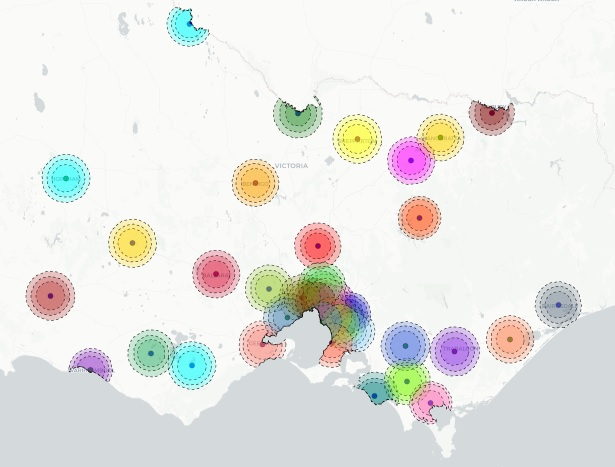

This site contains live versions of the examples discussed in the paper
The map of radial hospital coverage areas of 15 to 25km maximum driving distances with detailed statistics about women at high and low risk of complications (2015-2017)
